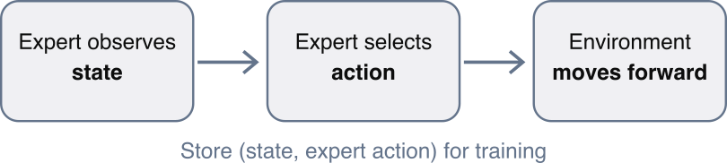
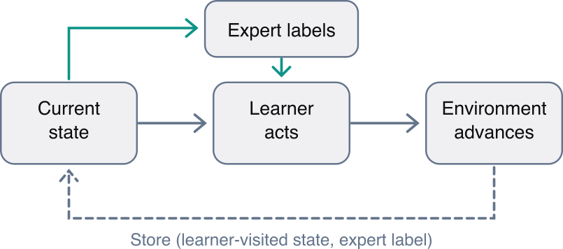

Learning by Watching: Imitation Learning and Behavior Cloning and DAgger
Ashis Kumer Biswas, Ph.D.
Main theme today is –
We know how to train an agent through trial and error. But what if experimenting is expensive, unsafe, or prohibited? Can we still learn a good policy?
What if we could train an intelligent agent simply by showing it examples of good decisions, without having it discover those decisions through trial and error?
Few Examples of Learning
Example 1 — Robot learns to pick up objects
A human demonstrates how to position a robot gripper, close it, lift an object, and place it in a box.
The robot records observations and corresponding expert movements.
Instead of independently discovering grasping through thousands of failed attempts, it learns to reproduce those movements.
This is the same cross-entropy objective used in neural-network classification.
Concept Review
Which statement correctly describes Behavior Cloning?
A. The agent learns by randomly exploring until rewards improve.
B. The agent calculates policy gradients from discounted returns.
C. The agent predicts actions from expert-labeled states.
D. The agent learns the transition model of the environment.
Correct. C: Behavior Cloning treats the expert’s actions as supervised targets.
Demo 1 — Build an intelligent thermostat by imitation
An expert’s rule:
If the room is substantially colder than the desired temperature, turn the heating on.
Otherwise, leave it off.
import numpy as npimport torchimport torch.nn as nnrng = np.random.default_rng(42)torch.manual_seed(42)# Expert demonstrationscurrent_temp = rng.uniform(40, 90, 1000)target_temp = rng.uniform(50, 80, 1000)X = np.column_stack( [ current_temp, target_temp] ).astype(np.float32)# 1 = heating on, 0 = heating off# If difference between current temp and target temp is more than 1 degree:# turn the heat ON# Otherwise:# leave the heat OFFy = []for i inrange(len(X)):if (current_temp[i] - target_temp[i]) <=1.0: y += [1]else: y += [0]print(X[:5])print(y[:5])
model = nn.Sequential( nn.Linear(2, 16), nn.ReLU(), nn.Linear(16, 2))optimizer = torch.optim.Adam( model.parameters(), lr=0.01 )loss_fn = nn.CrossEntropyLoss()states = torch.tensor(X)actions = torch.tensor(y)num_epochs =200for epoch inrange(num_epochs): logits = model(states) loss = loss_fn(logits, actions) optimizer.zero_grad() loss.backward() optimizer.step()print(f'epoch=[{epoch}]: loss = {loss.item():.2f}')print(f'Done training the classifier')print(f'Now test the classifier')# Let the learned controller make a decisiontest_state = torch.tensor([[60.0, 63.0]])print(f'Given test sample: {test_state}')with torch.no_grad(): action = model(test_state).argmax(dim=1).item()print(f'Classifier says: ...',sep='')print("Heating ON"if action ==1else"Heating OFF")print(f'------------------------------------')test_state = torch.tensor([[75.0, 67.0]])# test with another test_stateprint(f'Another test sample: {test_state}')with torch.no_grad(): action = model(test_state).argmax(dim=1).item()print(f'Classifier says: ...',sep='')print("Heating ON"if action ==1else"Heating OFF")
epoch=[0]: loss = 2.30
epoch=[1]: loss = 2.03
epoch=[2]: loss = 1.38
epoch=[3]: loss = 0.52
epoch=[4]: loss = 0.73
epoch=[5]: loss = 0.62
epoch=[6]: loss = 0.30
epoch=[7]: loss = 0.20
epoch=[8]: loss = 0.34
epoch=[9]: loss = 0.34
epoch=[10]: loss = 0.20
epoch=[11]: loss = 0.12
epoch=[12]: loss = 0.15
epoch=[13]: loss = 0.20
epoch=[14]: loss = 0.20
epoch=[15]: loss = 0.16
epoch=[16]: loss = 0.11
epoch=[17]: loss = 0.10
epoch=[18]: loss = 0.12
epoch=[19]: loss = 0.15
epoch=[20]: loss = 0.14
epoch=[21]: loss = 0.11
epoch=[22]: loss = 0.09
epoch=[23]: loss = 0.09
epoch=[24]: loss = 0.11
epoch=[25]: loss = 0.12
epoch=[26]: loss = 0.10
epoch=[27]: loss = 0.09
epoch=[28]: loss = 0.08
epoch=[29]: loss = 0.09
epoch=[30]: loss = 0.10
epoch=[31]: loss = 0.10
epoch=[32]: loss = 0.09
epoch=[33]: loss = 0.08
epoch=[34]: loss = 0.08
epoch=[35]: loss = 0.09
epoch=[36]: loss = 0.09
epoch=[37]: loss = 0.08
epoch=[38]: loss = 0.08
epoch=[39]: loss = 0.08
epoch=[40]: loss = 0.08
epoch=[41]: loss = 0.08
epoch=[42]: loss = 0.08
epoch=[43]: loss = 0.07
epoch=[44]: loss = 0.07
epoch=[45]: loss = 0.07
epoch=[46]: loss = 0.08
epoch=[47]: loss = 0.07
epoch=[48]: loss = 0.07
epoch=[49]: loss = 0.07
epoch=[50]: loss = 0.07
epoch=[51]: loss = 0.07
epoch=[52]: loss = 0.07
epoch=[53]: loss = 0.07
epoch=[54]: loss = 0.07
epoch=[55]: loss = 0.07
epoch=[56]: loss = 0.07
epoch=[57]: loss = 0.07
epoch=[58]: loss = 0.07
epoch=[59]: loss = 0.07
epoch=[60]: loss = 0.07
epoch=[61]: loss = 0.07
epoch=[62]: loss = 0.07
epoch=[63]: loss = 0.07
epoch=[64]: loss = 0.07
epoch=[65]: loss = 0.07
epoch=[66]: loss = 0.07
epoch=[67]: loss = 0.07
epoch=[68]: loss = 0.07
epoch=[69]: loss = 0.07
epoch=[70]: loss = 0.07
epoch=[71]: loss = 0.07
epoch=[72]: loss = 0.06
epoch=[73]: loss = 0.06
epoch=[74]: loss = 0.06
epoch=[75]: loss = 0.06
epoch=[76]: loss = 0.06
epoch=[77]: loss = 0.06
epoch=[78]: loss = 0.06
epoch=[79]: loss = 0.06
epoch=[80]: loss = 0.06
epoch=[81]: loss = 0.06
epoch=[82]: loss = 0.06
epoch=[83]: loss = 0.06
epoch=[84]: loss = 0.06
epoch=[85]: loss = 0.06
epoch=[86]: loss = 0.06
epoch=[87]: loss = 0.06
epoch=[88]: loss = 0.06
epoch=[89]: loss = 0.06
epoch=[90]: loss = 0.06
epoch=[91]: loss = 0.06
epoch=[92]: loss = 0.06
epoch=[93]: loss = 0.06
epoch=[94]: loss = 0.06
epoch=[95]: loss = 0.06
epoch=[96]: loss = 0.06
epoch=[97]: loss = 0.06
epoch=[98]: loss = 0.06
epoch=[99]: loss = 0.06
epoch=[100]: loss = 0.06
epoch=[101]: loss = 0.06
epoch=[102]: loss = 0.06
epoch=[103]: loss = 0.06
epoch=[104]: loss = 0.06
epoch=[105]: loss = 0.06
epoch=[106]: loss = 0.06
epoch=[107]: loss = 0.06
epoch=[108]: loss = 0.06
epoch=[109]: loss = 0.06
epoch=[110]: loss = 0.06
epoch=[111]: loss = 0.06
epoch=[112]: loss = 0.06
epoch=[113]: loss = 0.06
epoch=[114]: loss = 0.06
epoch=[115]: loss = 0.06
epoch=[116]: loss = 0.06
epoch=[117]: loss = 0.06
epoch=[118]: loss = 0.06
epoch=[119]: loss = 0.06
epoch=[120]: loss = 0.05
epoch=[121]: loss = 0.05
epoch=[122]: loss = 0.05
epoch=[123]: loss = 0.05
epoch=[124]: loss = 0.05
epoch=[125]: loss = 0.05
epoch=[126]: loss = 0.05
epoch=[127]: loss = 0.05
epoch=[128]: loss = 0.05
epoch=[129]: loss = 0.05
epoch=[130]: loss = 0.05
epoch=[131]: loss = 0.05
epoch=[132]: loss = 0.05
epoch=[133]: loss = 0.05
epoch=[134]: loss = 0.05
epoch=[135]: loss = 0.05
epoch=[136]: loss = 0.05
epoch=[137]: loss = 0.05
epoch=[138]: loss = 0.05
epoch=[139]: loss = 0.05
epoch=[140]: loss = 0.05
epoch=[141]: loss = 0.05
epoch=[142]: loss = 0.05
epoch=[143]: loss = 0.05
epoch=[144]: loss = 0.05
epoch=[145]: loss = 0.05
epoch=[146]: loss = 0.05
epoch=[147]: loss = 0.05
epoch=[148]: loss = 0.05
epoch=[149]: loss = 0.05
epoch=[150]: loss = 0.05
epoch=[151]: loss = 0.05
epoch=[152]: loss = 0.05
epoch=[153]: loss = 0.05
epoch=[154]: loss = 0.05
epoch=[155]: loss = 0.05
epoch=[156]: loss = 0.05
epoch=[157]: loss = 0.05
epoch=[158]: loss = 0.05
epoch=[159]: loss = 0.05
epoch=[160]: loss = 0.05
epoch=[161]: loss = 0.05
epoch=[162]: loss = 0.05
epoch=[163]: loss = 0.05
epoch=[164]: loss = 0.05
epoch=[165]: loss = 0.05
epoch=[166]: loss = 0.05
epoch=[167]: loss = 0.05
epoch=[168]: loss = 0.05
epoch=[169]: loss = 0.05
epoch=[170]: loss = 0.05
epoch=[171]: loss = 0.05
epoch=[172]: loss = 0.05
epoch=[173]: loss = 0.05
epoch=[174]: loss = 0.05
epoch=[175]: loss = 0.05
epoch=[176]: loss = 0.05
epoch=[177]: loss = 0.05
epoch=[178]: loss = 0.05
epoch=[179]: loss = 0.05
epoch=[180]: loss = 0.05
epoch=[181]: loss = 0.05
epoch=[182]: loss = 0.05
epoch=[183]: loss = 0.05
epoch=[184]: loss = 0.05
epoch=[185]: loss = 0.05
epoch=[186]: loss = 0.05
epoch=[187]: loss = 0.04
epoch=[188]: loss = 0.04
epoch=[189]: loss = 0.04
epoch=[190]: loss = 0.04
epoch=[191]: loss = 0.04
epoch=[192]: loss = 0.04
epoch=[193]: loss = 0.04
epoch=[194]: loss = 0.04
epoch=[195]: loss = 0.04
epoch=[196]: loss = 0.04
epoch=[197]: loss = 0.04
epoch=[198]: loss = 0.04
epoch=[199]: loss = 0.04
Done training the classifier
Now test the classifier
Given test sample: tensor([[60., 63.]])
Classifier says: ...
Heating ON
------------------------------------
Another test sample: tensor([[75., 67.]])
Classifier says: ...
Heating OFF
A point to note
The network is not explicitly given the thermostat rule. It learns to approximate the rule from the examples.
For this particular state, the expert would turn heating on; the model should learn that decision after sufficient training. You should test several states rather than assuming every prediction will be correct.
Few questions to ponder:
Questions
Where is the expert policy defined?
if (current_temp[i] - target_temp[i]) <=1.0: y += [1]else: y += [0]
It means:
If the current temperature is more than 1°F below the desired temperature, turn the heater ON (1).
Otherwise, keep the heater OFF (0).
For example:
Current temperature
Target temperature
Expert action
65°F
69°F
ON (1)
65°F
67°F
ON (1)
70°F
70.5°F
OFF (0)
75°F
70°F
OFF (0)
The expert isn’t a trained neural network. It is a simple, manually designed rule-based controller.
Note: An expert in imitation learning does not have to be a human. It can be an existing algorithm, a rule-based controller, or a previously trained RL agent.
Which part of the code represents demonstrations?
The demonstrations are the pairs of input states and corresponding expert actions:
X = np.column_stack( [ current_temp, target_temp] ).astype(np.float32)
y = []
for i in range(len(X)):
if (current_temp[i] - target_temp[i]) <= 1.0:
y += [1]
else:
y += [0]
Here:
X contains the observations (current and target temperatures).
PyTorch’s CrossEntropyLoss() implements this objective for discrete actions.
In PPO, the agent does not receive expert action labels. Instead, it uses rewards and estimated advantages to determine which actions should become more or less probable.
Even then, adding inputs alone is insufficient. The training demonstrations must contain meaningful decisions based on that information, or we must use a different learning objective.
This is one reason sequential optimization with RL can be more useful than simple Behavior Cloning.
What labels trained the thermostat?
The labels were binary action values:
\[
y_i\in\{0,1\}
\]
where:
0 means heater OFF.
1 means heater ON.
These labels were passed into the cross-entropy training function:
The network produces two logits, one for each possible action. Cross-entropy encourages the network to assign higher probability to the expert’s selected action.
For example, if the expert label is 1, a network producing:
Then applied the expert rule to produce the correct action for each observation.
This process is sometimes called programmatic labeling because the labels come from a predefined function rather than human annotation.
An important distinction: our thermostat demonstrations are independently generated state-action pairs, not trajectories from a simulated heating system. That is sufficient for demonstrating simple Behavior Cloning, but not enough to evaluate long-term heating performance.
Would the thermostat necessarily minimize total electricity cost over a month?
No.
The thermostat was trained to imitate a temperature-based rule, not to minimize electricity expenditure.
Its loss function is:
\[
L_{\text{BC}}=-\log\pi_\theta(a^E\mid s)
\]
There is no electricity cost, energy consumption, or cumulative reward in this objective.
A controller achieving 100% expert-action accuracy could still be expensive to operate if the expert itself is not cost-efficient.
To optimize electricity consumption over time, we could formulate the thermostat as an MDP with a reward such as:
For actual monthly bill minimization over a finite horizon, we could instead optimize the undiscounted total cost with appropriate comfort constraints.
This introduces the distinction between imitating individual decisions and optimizing long-term consequences.
So, the imitation thermostat …
What did our thermostat really learn?
It learned to approximate the expert’s ON/OFF temperature rule.
It did not learn how to optimize long-term electricity cost and comfort.
Suppose the expert thermostat makes inefficient decisions. If our Behavior Cloning agent learns to imitate the expert perfectly, have we created a better controller?
Not necessarily. We have created a good imitator, not necessarily a good decision-maker.
This distinction is precisely what motivates Lecture 10B: Offline Reinforcement Learning, where the agent learns from recorded actions and their consequences, rather than merely copying the actions.
Observation space: \[
s=[x,\dot{x},\theta,\dot{\theta}]
\] where, \(x\) is Cart Position,
\(x'\) is Cart Velocity,
\(\theta\) is Pole angle,
\(\dot{\theta}\) is Pole angular velocity.
Action space: push left (0) or right (1).
Goal: balance the pole for as many as 500 steps.
Step 1 — Create a simple expert
The teacher below is deliberately simple: \[
a_E=\mathbf{1}(\theta+0.2\dot{\theta}>0)
\]
It reacts to how far the pole leans and how quickly it rotates. It is not a learned RL agent. A previously trained PPO policy could instead provide demonstrations using exactly the same data-collection function.
We don’t even need to train a PPO agent to make this demonstration work. We can start with a straightforward scripted controller:
Important: The action accuracy above is measured on expert-generated states. It does not tell us how well the cloned policy performs on states it causes itself to visit.
To test the actual task, we must roll the policy out in the simulator and measure episode return.
Compare with PPO
Compare and contrast these two objectives side by side:
PPO
Behavior Cloning
Uses collected rewards and advantages
Uses expert action labels
Policy-gradient optimization
Supervised classification
Learns through new experience
Learns from demonstrations
Needs environment interaction for training
Can train from stored demonstrations
The policy architecture can be almost identical. It is the learning signal that changes.
Now run several evaluation episodes and compare average return with the scripted expert.
Can you guess?
Will the Behavior Cloning agent perform exactly like the expert? If not, why not?
Closed-loop performance: Random vs. Expert vs. Cloned policy
An action classifier can have reasonable accuracy and still be an unreliable controller.
We measure the number of steps before failure or the 500-step time limit. This is equivalent to episode return for the default CartPole reward of +1 per step.
def cloned_action(policy, obs): policy.eval()with torch.inference_mode(): x = torch.as_tensor(obs, dtype=torch.float32).unsqueeze(0)returnint(policy(x).argmax(dim=1).item())def evaluate_controller(env, controller, n_episodes=12, first_seed=2000, reset_bounds=None): returns = []for i inrange(n_episodes): options =Noneif reset_bounds isNoneelse {'low': -float(reset_bounds), 'high': float(reset_bounds)} obs, _ = env.reset(seed=first_seed + i, options=options) total =0.whileTrue: a =int(controller(obs)) obs, reward, terminated, truncated, _ = env.step(a) total +=float(reward)if terminated or truncated:break returns.append(total) env.close()return np.asarray(returns)random_rng = np.random.default_rng(77)controllers = {'Random': lambda obs: int(random_rng.integers(2)),'Scripted expert': expert_action,'Behavior cloning': lambda obs: cloned_action(bc_policy, obs),}for name, fn in controllers.items(): env = gym.make("CartPole-v1") scores = evaluate_controller(env, fn)print(f'{name:17s} average {scores.mean():6.1f}, 'f'min {scores.min():5.0f}, max {scores.max():5.0f}')
Random average 21.2, min 11, max 42
Scripted expert average 500.0, min 500, max 500
Behavior cloning average 376.2, min 163, max 500
Distribution shift: is the learner robust?
Can the behavior-cloned agent continue making good decisions when the environment starts in conditions different from those represented in its training demonstrations?
an agent can learn to imitate an expert under familiar conditions but struggle considerably when it encounters unfamiliar conditions.
The expert demonstrations began very close to upright (±0.05 in each observation dimension).
Now start from a wider range of initial conditions (±0.15).
In Gymnasium, reset(options={"low":..., "high":...}) changes the initial-state bounds.
BC under shifted starts: 172.8 steps; expert: 443.4 steps
BC shifted episode scores: [131, 272, 166, 118, 124, 117, 181, 171, 147, 117, 177, 352]
The difference is substantial:
The expert keeps the pole balanced for an average of 443.4 steps.
The cloned agent manages only 172.8 steps.
The cloned agent achieves approximately 39% of the expert’s episode duration.
All 12 recorded BC episodes ended before the 500-step limit.
Notice that BC sometimes achieves over 250 or even 350 steps. It has learned a useful control policy, but its behavior is inconsistent across these more challenging initial conditions.
The main finding: The expert remains effective under the shifted initialization distribution, while the cloned agent performs considerably worse.
Why small errors compound
This phenomenon is called covariate shift, and in sequential decision-making it can cause compounding errors.
Behavior Cloning trains on states sampled from the expert distribution, \(d^{\pi_E}(s)\). But the deployed policy generates states from its own distribution, \(d^{\pi_{BC}}(s)\).
One wrong action → unfamiliar state → more wrong actions → task failure.
Think back to the Grand Prix: even if a steering model agrees with the expert on most on-track frames, can it recover once it drifts toward an unfamiliar edge of the track?
DAgger: Dataset Aggregation
Behavior Cloning asks:
What would the expert do in the states contained in my dataset?
DAgger asks:
What would the expert do in the states that my learned agent actually encounters, including after its own mistakes?
By collecting expert labels on learner-visited states, DAgger can help the policy learn corrective actions that may be underrepresented in the original demonstrations.
Here below are the DAgger steps:
Run the learner to collect the states that it visits.
Ask the expert to label those learner-visited states.
Add those newly labeled examples to the demonstration dataset.
Retrain the policy and repeat.
We use a fixed scripted expert that can label any simulated CartPole state. A real-world implementation might require costly human labels and safety review.
Crucial: DAgger requires interaction to visit learner-induced states and is not the fixed-dataset offline RL setting.
DAgger frequently helps because the student learns the expert’s preferred decisions in the states caused by its own mistakes.
Improvements are not guaranteed: the expert may be imperfect, learner rollouts might not visit the right states, and the neural network may need different tuning.
This is a simplified DAgger classroom loop with the learner always acting and the expert only labeling; original DAgger includes policies mixed with the expert for early data collection and theoretical guarantees under assumptions.
To fairly compare algorithms in a report, evaluate several random seeds and report variability, not just one plotted mean.
Understanding DAgger: From Behavior Cloning to Learning from Mistakes
The most important thing to understand about DAgger (Dataset Aggregation) is that it does not introduce a new neural-network architecture or even a fundamentally different loss function.
DAgger still trains the policy using supervised learning, just like Behavior Cloning (BC). What changes is how we collect the training examples.
The crucial distinction is:
Behavior Cloning: The expert controls CartPole, and we learn from the states and actions generated by the expert.
DAgger: The learner controls CartPole, but the expert tells us what action should have been taken at every state visited by the learner.
This seemingly small change is what makes DAgger interesting.
First, understand the difference visually
Behavior Cloning — Expert generates the trajectory

DAgger — Learner generates the trajectory

In DAgger, the learner’s action determines the next state, while the expert’s action is used as the supervised training label.
Consider this hypothetical CartPole situation:
The pole leans to the right, and the learner mistakenly pushes left. The next observation might be a state in which the pole is falling more rapidly.
In ordinary BC, the training dataset may contain very few states like this because the expert would have corrected the pole earlier.
DAgger allows the learner to encounter that difficult state and asks the expert how to recover. The learner can subsequently train on this corrective example.
Let’s Walk through collect_dagger_states()
def collect_dagger_states( policy, n_episodes=3, seed_start=3000 ):# 1. Create the CartPole environment env = gym.make("CartPole-v1")# 2. Prepare two lists to collect examples learner_states = [] teacher_labels = []# 3. Run several episodes controlled by the learnerfor episode inrange(n_episodes): obs, _ = env.reset( seed=seed_start + episode )whileTrue:# 4. Save the state visited by the learner learner_states.append(obs.copy())# 5. Ask the expert what action SHOULD# be taken in this state teacher_labels.append( expert_action(obs) )# 6. Let the LEARNER actually choose# and execute the action action = cloned_action(policy, obs) obs, reward, terminated, truncated, _ = env.step(action)# 7. Continue until the episode endsif terminated or truncated:break env.close()# 8. Return the states and expert labelsreturn ( np.asarray(learner_states, dtype=np.float32), np.asarray(teacher_labels, dtype=np.int64) )
Let’s examine the essential steps.
Step A — Run the current learned policy
action = cloned_action(policy, obs)
Here, policy is initially the Behavior Cloning policy you trained earlier.
Suppose its current observation is:
\[
s_t=[0.02,0.06,0.04,-0.12]
\]
representing cart position, cart velocity, pole angle, and pole angular velocity.
The learner predicts an action using its neural network.
Because we want to discover what states the learner reaches when it makes its own decisions, including mistakes.
If we executed the expert’s action every time, we would mostly recreate expert-generated trajectories, just as in ordinary Behavior Cloning.
Also note that a disagreement does not necessarily prove the learner chose a disastrous action; it means the action differs from this particular scripted expert.
Step D — Continue collecting the learner’s trajectory
Thus, DAgger is not learning a different reward function or using an Actor–Critic loss.
It is using supervised learning on a more representative collection of states.
One implementation detail worth noticing
Your original train_bc() creates a fresh neural network:
policy = ClonedPolicy()
Consequently, each DAgger round trains a new policy from scratch using the entire aggregated dataset. It does not continue updating the weights from the previous policy.
This is perfectly reasonable. Another implementation could warm-start from the previous policy and fine-tune using the accumulated data.
Either way, the newly learned policy is the one used to collect states during the next DAgger round.
Walking through the complete DAgger loop
Here is a slightly more readable version of the DAgger loop we saw in earlier slide. It also included a diagnostic showing how frequently the learner disagrees with the expert on the states it visited.
# Start with the original expert demonstrationsaggregated_X = X_train.copy()aggregated_y = y_train.copy()# Start with the Behavior Cloning agentdag_policy = bc_policyfor iteration inrange(5):print(f"\nDAgger round {iteration +1}")# STEP 1: Let current learner interact with CartPole# Expert labels all learner-visited states. new_states, new_labels = collect_dagger_states( dag_policy, n_episodes=3, seed_start=3000+ iteration *20 )# Optional diagnostic:# How often did this learner disagree with the expert? learner_actions = np.array([ cloned_action(dag_policy, state)for state in new_states ]) disagreement = np.mean( learner_actions != new_labels )print(f"New examples: {len(new_states)}")print(f"Expert disagreement: {disagreement:.1%}")# STEP 2: Combine old and new examples aggregated_X = np.concatenate([ aggregated_X, new_states ]) aggregated_y = np.concatenate([ aggregated_y, new_labels ])print(f"Total examples: {len(aggregated_X)}")# STEP 3: Train a new policy using ALL the examples torch.manual_seed(100+ iteration) dag_policy, losses = train_bc( aggregated_X, aggregated_y, epochs=80 )# STEP 4: Evaluate the updated policy env = gym.make("CartPole-v1") scores = evaluate_controller( env,lambda s: cloned_action(dag_policy, s), n_episodes=12, reset_bounds=0.15 )print(f"Mean episode return: {scores.mean():.1f}")
DAgger round 1
New examples: 1384
Expert disagreement: 10.2%
Total examples: 2384
Mean episode return: 398.2
DAgger round 2
New examples: 1500
Expert disagreement: 11.2%
Total examples: 3884
Mean episode return: 359.5
DAgger round 3
New examples: 1247
Expert disagreement: 8.3%
Total examples: 5131
Mean episode return: 465.0
DAgger round 4
New examples: 1500
Expert disagreement: 12.3%
Total examples: 6631
Mean episode return: 445.8
DAgger round 5
New examples: 1500
Expert disagreement: 4.7%
Total examples: 8131
Mean episode return: 476.7
This provides experience with situations that the current learner is more likely to encounter.
One adjustment I would make to the original DAgger code
This is particularly relevant to the earlier observation:
BC under shifted starts: 172.8 steps; expert: 443.4 steps.
Look at the existing DAgger function:
obs, _ = env.reset( seed=seed_start + episode)
This uses the environment’s default initialization range of ±0.05, while later you evaluate DAgger using ±0.15.
DAgger can still collect unfamiliar states resulting from the learner’s actions, but it isn’t explicitly collecting from the shifted initial-state distribution you’re investigating.
For this experiment, I would revise the reset step to:
This lets the learner experience the wider range of initial states during DAgger collection, with the expert providing corresponding labels.
It may help improve the learner’s ability to recover from initially unfamiliar conditions. The improvement is not guaranteed, and the shifted starts may produce shorter episodes and fewer training examples.
So, now, let’s compare by doing more experiments:
Model
Training-data source
Evaluation starts
BC
Expert trajectories, ±0.05 starts
±0.15
DAgger A
Learner trajectories, ±0.05 starts
±0.15
DAgger B
Learner trajectories, ±0.15 starts
±0.15
Expert
Scripted controller
±0.15
Use identical evaluation seeds and preferably 50–100 episodes for each policy.
This is an excellent way to distinguish collecting more examples from collecting examples relevant to the conditions where the learner struggles.
2 Questions for you
Q1. Where was the reward function used in the Behavior Cloning loss?
Answer: Nowhere. Only expert state-action pairs trained the classifier; rewards were used solely for evaluating policy performance.
Q2. Suppose you’re prohibited from running your learner at all and can access only a fixed database ((s,a,r,s’,done)). Could you still execute DAgger?
Answer: No. DAgger needs interaction to get new learner-visited states and their expert labels. A fixed transition dataset motivates offline RL (a topic to cover next in this course).
Q3. Suppose the expert makes the correct decision in a particular state, but the cloned agent makes the wrong decision. During DAgger: Should we record the action taken by the learner or the action recommended by the expert as the training target?
The correct answer is the expert’s action.
The learner’s action is still important because it determines the state the environment visits next. But if we used the learner’s own action as the training target, we would be training it to reproduce its existing behavior—including its mistakes.
DAgger instead learns from expert decisions in the states the learner causes itself to encounter.
That is the central idea
Behavior Cloning learns from where the expert goes. DAgger learns what the expert would do where the learner goes.
Note: the two ideas presented here today lead to the next lecture naturally: both still depend on expert labels, while Offline RL attempts to learn from recorded state transitions and rewards, potentially improving upon the historical behavior.
Takeaways
A policy that imitates an expert well under familiar conditions is not necessarily robust to unfamiliar conditions.
The ability to reproduce expert decisions is different from the ability to recover from mistakes and maintain good long-term performance.
Where to go from here?
Train BC with 1, 2, 4, and 8 expert episodes. Compare expert-action classification accuracy with actual episode return.
Increase the reset range from 0.05 to 0.15, then 0.18. Quantify robustness; if the environment terminates quickly, explain why.